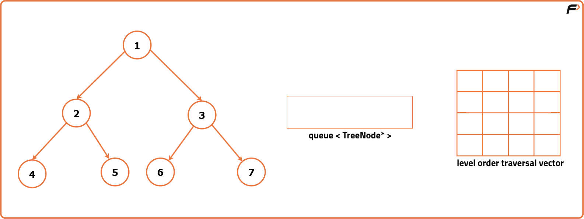
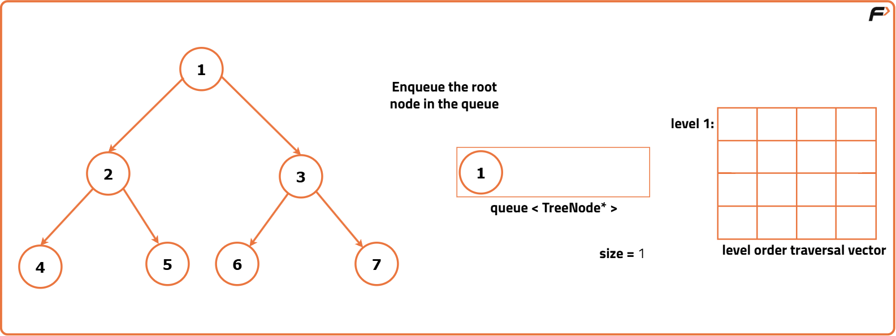
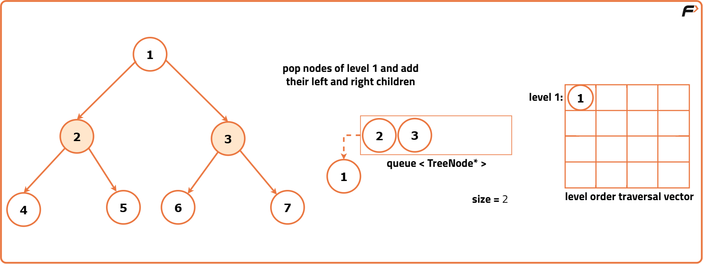
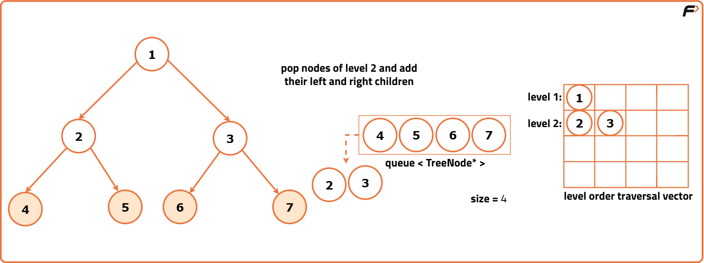
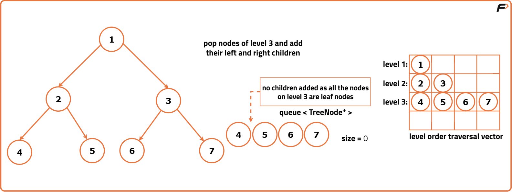

Level Order Traversal of a Binary Tree
Problem Statement: Given the root of a binary tree, return the level order traversal of its nodes' values. (i.e., from left to right, level by level).
Examples
Example 1:
Input: root = [3, 9, 20, null, null, 15, 7]
Output:
[ [3], [9, 20], [15, 7] ]
Example 2:
Input: root = [1, 4, null, 4, 2]
Output: [ [1], [4], [4, 2] ]
Disclaimer: Here is the practice link to help you assess your knowledge better. It's highly recommend trying to solve it before looking at the solution.
Approach
Algorithm
- Start by initializing an empty queue to hold nodes as we traverse the tree level by level.
- Enqueue the root node into the queue. If the tree is empty, return an empty 2D vector immediately.
- While the queue is not empty, process each level of the tree:
- Determine the number of nodes at the current level by checking the size of the queue.
- Create a temporary vector to store the values of nodes at this level.
- For each node at the current level:
- Dequeue the front node from the queue.
- Store the node's value in the temporary vector.
- Enqueue the left and right children of the current node (if they exist) into the queue.
- After processing all nodes at the current level, add the temporary vector to the final 2D vector representing the level-order traversal.
- Once all levels are processed, return the 2D vector containing the level-order traversal of the binary tree.





Code
#include <bits/stdc++.h>
using namespace std;
// Definition for a binary tree node.
struct TreeNode {
int data;
TreeNode* left;
TreeNode* right;
// Constructor with a value parameter for TreeNode
TreeNode(int val) : data(val), left(nullptr), right(nullptr) {}
};
class Solution {
public:
// Function to perform level-order traversal of a binary tree
vector<vector<int>> levelOrder(TreeNode* root) {
// Create a 2D vector to store levels
vector<vector<int>> ans;
if (root == nullptr) {
// If the tree is empty, return an empty vector
return ans;
}
// Create a queue to store nodes for level-order traversal
queue<TreeNode*> q;
// Push the root node to the queue
q.push(root);
while (!q.empty()) {
// Get the size of the current level
int size = q.size();
// Create a vector to store nodes at the current level
vector<int> level;
for (int i = 0; i < size; i++) {
// Get the front node in the queue
TreeNode* node = q.front();
// Remove the front node from the queue
q.pop();
// Store the node value in the current level vector
level.push_back(node->data);
// Enqueue the child nodes if they exist
if (node->left != nullptr) {
q.push(node->left);
}
if (node->right != nullptr) {
q.push(node->right);
}
}
// Store the current level in the answer vector
ans.push_back(level);
}
// Return the level-order traversal of the tree
return ans;
}
};
// Function to print the elements of a vector
void printVector(const vector<int>& vec) {
// Iterate through the vector and print each element
for (int num : vec) {
cout << num << " ";
}
cout << endl;
}
// Main function
int main() {
// Creating a sample binary tree
TreeNode* root = new TreeNode(1);
root->left = new TreeNode(2);
root->right = new TreeNode(3);
root->left->left = new TreeNode(4);
root->left->right = new TreeNode(5);
// Create an instance of the Solution class
Solution solution;
// Perform level-order traversal
vector<vector<int>> result = solution.levelOrder(root);
cout << "Level Order Traversal of Tree: "<< endl;
// Printing the level order traversal result
for (const vector<int>& level : result) {
printVector(level);
}
return 0;
}Complexity Analysis
Time Complexity: O(N), where N is the number of nodes in the binary tree. Each node is visited once during the level-order traversal.
Space Complexity: O(N), where N is the number of nodes in the binary tree. The space is used by the queue to store nodes at each level, and in the worst case, it can hold all nodes at the last level.